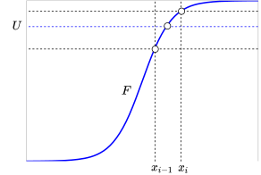
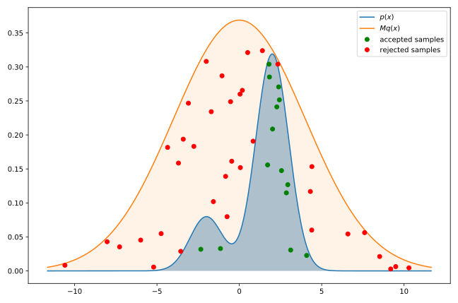
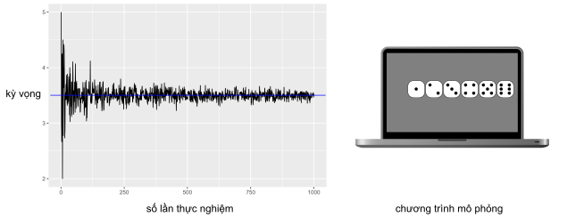
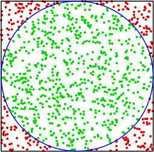
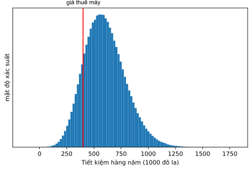

11 Phương pháp mô phỏng Monte Carlo
11.1 Một số khái niệm
Đối tượng (object) là tất cả những sự vật, sự kiện mà hoạt động của con người có liên quan tới.
Hệ thống (system) là tập hợp các đối tượng (con người, máy móc), sự kiện mà giữa chúng có những mối quan hệ nhất định.
Trạng thái của hệ thống (state of system) là tập hợp các tham số, biến số dùng để mô tả hệ thống tại một thời điểm và trong điều kiện nhất định.
Mô hình (model) là một sơ đồ phản ánh đối tượng, con người dùng sơ đồ đó để nghiên cứu, thực nghiệm nhằm tìm ra quy luật hoạt động của đối tượng hay nói cách khác mô hình là đối tượng thay thế của đối tượng gốc để nghiên cứu về đối tượng gốc.
Mô hình hóa (modeling) là thay thế đối tượng gốc bằng một mô hình nhằm các thu nhận thông tin quan trọng về đối tượng bằng cách tiến hành các thực nghiệm trên mô hình. Lý thuyết xây dựng mô hình và nghiên cứu mô hình để hiểu biết về đối tượng gốc gọi lý thuyết mô hình hóa. Nếu các quá trình xảy ra trong mô hình đồng nhất (theo các chỉ tiêu định trước) với các quá trình xảy ra trong đối tượng gốc thì người ta nói rằng mô hình đồng nhất với đối tượng. Lúc này người ta có thể tiến hành các thực nghiệm trên mô hình để thu nhận thông tin về đối tượng.
Mô phỏng (simulation, imitation) là phương pháp mô hình hóa dựa trên việc xây dựng mô hình số (numerical model) và dùng phương pháp số (numerical method) để tìm các lời giải. Chính vì vậy máy tính số là công cụ hữu hiệu và duy nhất để thực hiện việc mô phỏng hệ thống.
Lý thuyết cũng như thực nghiệm đã chứng minh rằng, chỉ có thể xây dựng được mô hình gần đúng với đối tượng mà thôi, vì trong quá trình mô hình hóa bao giờ cũng phải chấp nhận một số giả thiết nhằm giảm bớt độ phức tạp của mô hình, để mô hình có thể ứng dụng thuận tiện trong thực tế. Mặc dù vậy, mô hình hóa luôn luôn là một phương pháp hữu hiệu để con người nghiên cứu đối tượng, nhận biết các quá trình, các quy luật tự nhiên. Đặc biệt, ngày nay với sự trợ giúp đắc lực của khoa học kỹ thuật, nhất là khoa học máy tính và công nghệ thông tin, người ta đã phát triển các phương pháp mô hình hóa cho phép xây dựng các mô hình ngày càng gần với đối tượng nghiên cứu, đồng thời việc thu nhận, lựa chọn, xử lý các thông tin về mô hình rất thuận tiện, nhanh chóng và chính xác. Chính vì vậy, mô hình hóa là một phương pháp nghiên cứu khoa học mà tất cả những người làm khoa học đều phải nghiên cứu và ứng dụng vào thực tiễn hoạt động của mình.
11.2 Mô hình hóa hệ thống
Tại sao cần mô hình hóa hệ thống
Khi nghiên cứu trên hệ thống thực gặp nhiều khó khăn do nhiều nguyên nhân
Giá thành nghiên cứu trên hệ thống thực quá đắt.
Nghiên cứu trên hệ thống thực đòi hỏi thời gian quá dài.
Nghiên cứu trên hệ thực ảnh hưởng đến sản xuất hoặc gây nguy hiểm cho người và thiết bị.
Trong một số trường hợp không cho phép làm thực nghiệm trên hệ thống thực.
Phương pháp mô hình hóa cho phép đánh giá hệ thống khi thay đổi tham số hoặc cấu trúc của hệ thống cũng như đánh giá phản ứng của hệ thống khi thay đổi tín hiệu điều khiển. Những số liệu này dùng để thiết kế hệ thống hoặc lựa chọn thông số tối ưu để vận hành hệ thống.
Phương pháp mô hình hóa cho phép nghiên cứu hệ thống ngay cả khi chưa có hệ thống thực
Mô hình phải đạt được hai tính chất cơ bản sau:
Tính đồng nhất: mô hình phải đồng nhất với đối tượng mà nó phản ánh theo những tiêu chuẩn định trước.
Tính thực dụng: có khả năng sử dụng mô hình để nghiên cứu hệ thống.
Các loại mô hình hóa hệ thống
Có hai loại mô hình, mô hình vật lý và mô hình toán học.
Mô hình vật lý là mô hình được cấu tạo bởi các phần tử vật lý. Các thuộc tính của đối tượng phản ánh các định luật vật lý xảy ra trong mô hình. Mô hình vật lý bao gồm mô hình thu nhỏ và mô hình tương tự.
Mô hình toán học thuộc loại mô hình trừu tượng. Các thuộc tính được phản ánh bằng các biểu thức, phương trình toán học. Mô hình toán học được chia thành mô hình giải tích và mô hình số. Mô hình số được xây dựng bằng các chương trình chạy trên máy tính. Ngày nay, nhờ sự phát triển của kỹ thuật máy tính và công nghệ thông tin, người ta đã xây dựng được các mô hình số có thể mô phỏng được quá trình hoạt động của đối tượng thực. Những mô hình loại này được gọi là mô hình mô phỏng.
11.3 Phương pháp mô phỏng
Mô phỏng là quá trình xây dựng mô hình toán học của hệ thống thực và sau đó tiến hành tính toán thực nghiệm trên mô hình để mô tả, giải thích và dự đoán hành vi của hệ thống thực
Phương pháp mô phỏng được đề xuất vào những năm 80 của thế kỷ 20. Từ đó đến nay phương pháp mô phỏng đã được nghiên cứu, hoàn thiện, và ứng dụng thành công vào nhiều lĩnh vực khác nhau như lĩnh vực khoa học kỹ thuật, khoa học xã hội, kinh tế, y tế… Sau đây trình bày một số lĩnh vực mà phương pháp mô phỏng đã được ứng dụng và phát huy được ưu thế của mình.
Phân tích và thiết kế hệ thống sản xuất, lập kế hoạch sản xuất.
Đánh giá phẩn cứng, phần mềm của hệ thống máy tính.
Quản lý và xác định chính sách sự trữ mua sắm vật tư của hệ thống kho vật tư, nguyên liệu.
Phân tích và đánh giá hệ thống phòng thủ quân sự, xác định chiến lược phòng thủ, tấn công.
Phân tích và thiết kế hệ thống thông tin liên lạc, đánh giá khả năng làm việc của mạng thông tin.
Phân tích và thiết kế các hệ thống giao thông như đường sắt, đường bộ, hàng không, cảng biển.
Đánh giá, phân tích và thiết kế các cơ sở dịch vụ như bệnh viện, bưu điện, nhà hàng, siêu thị.
Phân tích hệ thống kinh tế, tài chính.
Dự báo thời tiết.
Mô phỏng hoạt động của các máy gia tốc, vụ nổ hạt nhân.
Lập trình trò chơi (game programming), học tăng cường (reinforcement learning).
Phương pháp mô phỏng được ứng dụng vào các giai đoạn khác nhau của việc nghiên cứu, thiết kế và vận hành các hệ thống như sau:
Phương pháp mô phỏng được ứng dụng vào giai đoạn nghiên cứu, khảo sát hệ thống trước khi tiến hành thiết kế nhằm xác định độ nhạy của hệ thống đối với sự thay đổi cấu trúc và tham số của hệ thống.
Phương pháp mô phỏng được ứng dụng vào giai đoạn thiết kế hệ thống để phân tích và tổng hợp các phương án thiết kế hệ thống, lựa chọn cấu trúc hệ thống thỏa mãn các chỉ tiêu cho trước.
Phương pháp mô phỏng được ứng dụng vào giai đoạn vận hành hệ thống để đánh giá khả năng hoạt động, giải bài toán vận hành tối ưu, chẩn đoán các trạng thái đặc biệt của hệ thống.
11.4 Phương pháp mô phỏng Monte Carlo
Phương pháp Monte Carlo được xây dựng dựa trên nền tảng
Các số ngẫu nhiên (random numbers): đây là nền tảng quan trọng, góp phần hình thành nên “thương hiệu” của phương pháp. Các số ngẫu nhiên không chỉ được sử dụng trong việc mô phỏng lại các hiện tượng ngẫu nhiên xảy ra trong thực tế mà còn được sử dụng để lấy mẫu ngẫu nhiên của một phân bố nào đó, chẳng hạn như trong tính toán các tích phân số.
Luật số lớn (law of large numbers): luật này đảm bảo rằng khi ta chọn ngẫu nhiên các giá trị (mẫu thử) trong một dãy các giá trị (quần thể), kích thước dãy mẫu thử càng lớn thì các đặc trưng thống kê (trung bình, phương sai,...) của mẫu thử càng “gần” với các đặc trưng thống kê của quần thể. Luật số lớn rất quan trọng đối với phương pháp Monte Carlo vì nó đảm bảo cho sự ổn định của các giá trị trung bình của các biến ngẫu nhiên khi số phép thử đủ lớn.
Định lý giới hạn trung tâm (central limit theorem): định lý này phát biểu rằng dưới một số điều kiện cụ thể, trung bình số học của một lượng đủ lớn các phép lặp của các biến ngẫu nhiên độc lập (independent random variables) sẽ được xấp xỉ theo phân bố chuẩn (normal distrbution). Do phương pháp Monte Carlo là một chuỗi các phép thử được lặp lại nên định lý giới hạn trung tâm sẽ giúp chúng ta dễ dàng xấp xỉ được trung bình và phương sai của các kết quả thu được từ phương pháp.
Các loại số ngẫu nhiên
Có 3 loại số ngẫu nhiên chính
Số ngẫu nhiên thực (real random number): các đại lượng của các hiện tượng ngẫu nhiên trong thế giới tự nhiên.
Số gần ngẫu nhiên (quasi-random number): các đại lượng có phân bố tốt (có sự không nhất quán thấp).
Số giả ngẫu nhiên (pseudo-random number): các đại lượng mà phân bố của nó vượt qua được các kiểm tra về tính ngẫu nhiên.
Có hai điều chúng ta cần lưu ý khi mô phỏng các số ngẫu nhiên
Máy tính không thể tạo ra các dãy số ngẫu nhiên thật sự mà chỉ là các số giả ngẫu nhiên.
Bản thân các số không phải là ngẫu nhiên mà chỉ có dãy số mới có thể được xem là ngẫu nhiên
Một dãy số ngẫu nhiên tốt phải hội tụ đầy đủ các yếu tố sau đây
Chu kì lặp lại phải dài tức là việc gieo số ngẫu nhiên phải tạo ra được nhiều số trước khi lặp lại dãy số cũ của nó để cho không có phần nào của dãy bị trùng trong tính toán.
Các số được tạo ra phải hướng tới phân bố đều, tức là một dãy số bất kì gồm vài trăm số phải hướng tới phân bố đồng nhất trong toàn vùng khảo sát.
Các số không tương quan với nhau, tức là các số trong dãy phải độc lập về mặt thống kê với các số trước nó.
Thuật toán phải nhanh, tức là thời gian máy tính tạo ra số ngẫu nhiên phải nhỏ.
Các số giả ngẫu nhiên trong phương pháp Monte Carlo chỉ cần tỏ ra “đủ mức ngẫu nhiên”, nghĩa là tuân theo phân bố đều hay theo phân bố định trước, khi số lượng của chúng lớn.
Phương pháp tạo số giả ngẫu nhiên và lấy mẫu
Phương pháp đồng dư tuyến tính
Để tạo ra dãy số giả ngẫu nhiên độc lập từ một phân phối đều \(X_{1},X_{2},...,X_{n}\sim\mathcal{U}(0,1)\), ta sử dụng thuật toán sau
Khởi tạo hạt (seed) \(x_{0}\)
Lặp \(i=1...n\), tính \(x_{i}\) bằng công thức truy hồi \[x_{i}=(ax_{i-1}+c)\bmod m\]
Chuẩn hóa giá trị bằng \(x_{i}/m,i=1...n\)
- Các giá trị đề xuất \(m=2^{32}\), \(a=1\,664\,525\) và \(c=1\,013\,904\,223\)
Thực sự đây không phải là một thuật toán tạo số ngẫu nhiên tốt nhất nhưng ưu điểm của thuật toán này là đơn giản, dễ sử dụng, tính toán nhanh và dãy số ngẫu nhiên do nó tạo ra là khá tốt.
Ta có thể thấy rằng trong dãy số được tạo ra bởi phương pháp này mỗi số chỉ có thể xuất hiện duy nhất một lần trước khi dãy bị lặp lại.
Để tạo ra số ngẫu nhiên từ phân phối chuẩn \(\mathcal{N}(0,1)\) ta sử dụng thuật toán
Tạo số ngẫu nhiên \(u_{1},u_{2}\sim\mathcal{U}(0,1)\)
Tính \(\theta=2\pi u_{1}\) và \(r=\sqrt{-2\ln(u_{2})}\)
Tính \(x=r\cos(\theta)\) và \(y=r\sin(\theta)\) là các đại lượng ngẫu nhiên độc lập của phân phối \(\mathcal{N}(0,1)\)
Phương pháp biến đổi ngược (inverse transform method)
Giả sử ta cần tạo giá trị của một biến ngẫu nhiên rời rạc \(X\) có hàm phân bố xác suất \[p_{i}=P(X=x_{i}),\qquad i=0,1,...\]
Gọi \(F\) là hàm phân phối tích lũy
Tạo số ngẫu nhiên \(u\sim\mathcal{U}(0,1)\)
Chọn \(X=x_{i}\) nếu \(F(x_{i-1})\leq u<F(x_{i})\)

Tạo một biến Poisson ngẫu nhiên với tham số \(\lambda\) \[p_{i}=P(X=i)=\dfrac{\lambda^{i}}{i!}e^{-\lambda},\quad i=0,1,...\]
Tạo số ngẫu nhiên \(u\sim\mathcal{U}(0,1)\)
\(i=0,\alpha=e^{-\lambda},F=\alpha\)
Nếu \(u<F\) thì
Chọn \(X=i\) và dừng
ngược lại
\(i=i+1,\alpha=\dfrac{\lambda\alpha}{i},F=F+\alpha\) và lặp lại (c)
Phương pháp bác bỏ (acceptance-rejection method)
Giả sử ta cần tạo giá trị của một biến ngẫu \(X\sim p(x)\)
\(p(x)\) là phân phối mục tiêu
\(q(x)\) là phân phối dễ lấy mẫu
\(M\) là hằng số sao cho \(\forall x\in\mathcal{X},p(x)\leq Mq(x)\)
Tạo số ngẫu nhiên \(x\sim q(x)\)
Tạo số ngẫu nhiên \(u\sim\mathcal{U}(0,Mq(x))\)
Nếu \(u<p(x)\) thì chọn \(x\); ngược lại bác bỏ \(x\)

Phương pháp importance sampling
Đây là một phương pháp ước lượng giá trị kỳ vọng (hoặc các đại lượng thống kê quan tâm) của hàm \(f(x)\) trong đó \(x\) có phân phối \(p\). Tuy nhiên, Thay vì lấy mẫu từ \(p\), chúng ta sẽ tính kết quả từ việc lấy mẫu từ phân phối \(q\). Phương pháp này thường được xem là một kĩ thuật giảm phương sai trong lấy mẫu Monte Carlo.
Ta đã biết rằng kì vọng của \(f(x)\) được tính theo công thức \[\mathbb{E}_{x\sim p}[f(x)]=\int f(x)p(x)dx\]
Thay vì lấy mẫu biến \(x\) từ phân bố \(p\), ta sẽ đi lấy mẫu theo một phân bố \(q\) đơn giản hơn, khi đó kì vọng của \(f(x)\) được tính lại theo công thức \[\begin{aligned} \mathbb{E}_{x\sim p}[f(x)] & =\int f(x)p(x)dx\nonumber \\ & =\int f(x)\frac{p(x)}{q(x)}q(x)dx\nonumber \\ & =\mathbb{E}_{x\sim q}\left[f(x)\frac{p(x)}{q(x)}\right] \end{aligned}\]
Phương pháp Monte Carlo
Các thành phần chính của phương pháp mô phỏng Monte Carlo gồm có
Hàm mật độ xác suất (probability density function - PDF): một hệ vật lý (hay toán học) phải được mô tả bằng một bộ các PDF.
Nguồn phát số ngẫu nhiên (random number generator - RNG): Tạo ra các số ngẫu nhiên theo các phân phối PDF.
Ghi nhận (scoring): dữ liệu đầu ra phải được tích luỹ trong các khoảng giá trị của đại lượng cần quan tâm.
Ước lượng sai số (error estimation): ước lượng sai số thống kê (phương sai) theo số phép thử và theo đại lượng quan tâm.
Để tăng hiệu quả cho phương pháp Monte Carlo, chúng ta có thể sử dụng
Các kĩ thuật giảm phương sai (variance reduction technique): các phương pháp nhằm giảm phương sai của đáp số được ước lượng để giảm thời gian tính toán của mô phỏng Monte Carlo.
Song song hoá (parallelization) và vector hoá (vectorization): các thuật toán cho phép phương pháp Monte Carlo được thực thi một cách hiệu quả trên một cấu trúc máy tính hiệu năng cao.
Ước lượng kỳ vọng của mặt xúc xắc

Tính giá trị \(\pi\).

Sử dụng phân phối đều \(\mathcal{U}\) để tạo ra các điểm ngẫu nhiên nằm trong hình vuông
Tính tỉ số \[\pi\approx4\times\frac{\text{số điểm nằm trong hình tròn}}{\text{số điểm nằm trong hình vuông}}\]
Công ty A đang xem xét việc thuê một thiết bị hiện đại dùng trong sản xuất. Hợp đồng thuê một năm là 400000 đô la và không thể hủy bỏ sớm. Công ty đang đánh giá liệu mức sản xuất hàng năm và mức tiết kiệm trong bảo trì, lao động và nguyên vật liệu có đủ bù đắp cho việc thuê máy này không? Từ các chuyên gia về kinh tế, công ty có được các thông tin sau
Tiết kiệm bảo trì (MS): 10-20 USD mỗi đơn vị sản phẩm
Tiết kiệm lao động (LS): 2-8 USD mỗi đơn vị sản phẩm
Tiết kiệm nguyên vật liệu (RMS): 3-9 USD mỗi đơn vị sản phẩm
Mức sản xuất (PL): 15000-35000 đơn vị sản phẩm mỗi năm
Lưu ý: tất cả các biến đều có phân phối chuẩn và có khoảng tin cậy là 90%
Như vậy, ta có tiết kiệm trong một năm là \[\text{Tiết kiệm hàng năm}=(MS+LS+RMS)\times PL\]
Sử dụng phương pháp Monte Carlo chạy mô phỏng

11.5 ✏️ Bài tập
Giải các bài tập xác suất bằng phương pháp Monte Carlo
Giả sử bạn đang quản lý dự án liên quan đến việc tạo ra module e-learning. Việc tạo ra module e-learning bao gồm ba công việc (task) theo tuần tự: viết nội dung, tạo đồ họa, và tích hợp các yếu tố đa phương tiện. Dựa trên kinh nghiệm chuyên môn ta có ước lượng thời gian hoàn thành cho từng công việc như sau
| Công việc | trường hợp tốt nhất | khả thi nhất | trường hợp xấu nhất |
|---|---|---|---|
| viết nội dung | 4 | 6 | 8 |
| làm hình ảnh | 5 | 7 | 9 |
| tích hợp | 2 | 4 | 6 |
Hãy xác định khả năng hoàn thành dự án trong 17 ngày?
Giả sử bạn đang kinh doanh một dịch vụ dựa trên đăng ký trực tuyến.
Phí đăng ký là 10 đô la mỗi tháng cho mỗi người dùng và có thể bị hủy bỏ bất kỳ tháng nào.
Hiện tại đang có 10000 người dùng.
Doanh thu định kỳ hàng tháng là \[\text{số người dùng}\times\text{phí đăng ký}.\]
Chi phí duy trì dịch vụ hàng năm là cố định ở mức 1 triệu đô la mỗi năm bất kể người dùng. Bảng dưới đây là tỉ lệ tăng trưởng người dùng từng tháng (có thể tăng hoặc giảm) trong 5 năm qua
| Year | Jan | Feb | Mar | Apr | May | Jun | Jul | Aug | Sep | Oct | Nov | Dec |
|---|---|---|---|---|---|---|---|---|---|---|---|---|
| 2016 | -2.0% | 3.5% | 0.5% | 2.2% | 1.9% | 2.8% | 2.2% | 0.2% | 5.0% | 3.0% | 3.6% | -4.6% |
| 2017 | -11.4% | 4.7% | -3.1% | -3.9% | -4.3% | -1.4% | -4.5% | 4.4% | 7.7% | 10.3% | 2.3% | -1.4% |
| 2018 | 1.3% | -5.8% | 5.2% | -8.6% | -4.1% | -1.5% | 2.4% | -2.7% | -3.3% | -0.6% | 6.0% | -3.7% |
| 2019 | 0.0% | 1.1% | 2.8% | 0.3% | 9.6% | -6.7% | 1.0% | -1.3% | -4.3% | -3.0% | -1.2% | -8.3% |
| 2020 | -7.9% | -0.2% | 0.9% | 1.0% | -4.6% | 2.0% | -0.9% | 7.3% | -4.5% | -7.9% | -4.1% | 5.6% |
Bạn kỳ vọng 12 tháng trong năm tới sẽ giống với bất kỳ tháng nào trong 60 tháng trước đó. Hãy xác định khả năng lãi khi tiếp tục vận hành dịch vụ này trong năm tới hay không?